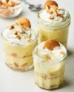

banana pudding
banana pudding is disgusting. there, i said it. and if you are about to argue, i can list many reasons why you're wrong. for instance, it tastes like banana, which is revolting. adding on, the texture of banana pudding is almost always slimy and mushy. sometimes it's even liquid-y. also, banana pudding smells terrible. if you make banana pudding at your house, i don't know why you would but if you do, it stinks up your kitchen and fridge just from the smell. simply put, it's gross.
because of all of these reasons, banana pudding is absolutely revolting. but, there is the once in a lifetime chef that could maybe pull it off. and for that, my rating is...
1/10
............................................................................................................................................................................................................................
but, if you truly want to make banana pudding and punish yourself, or maybe you want to challenge my argument, here is a recipe that is said to be good: all recipes banana pudding
back to home